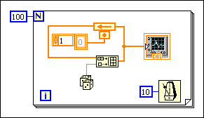
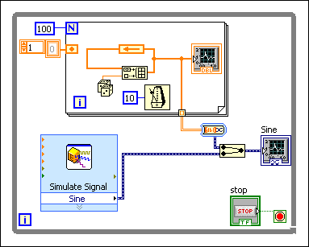
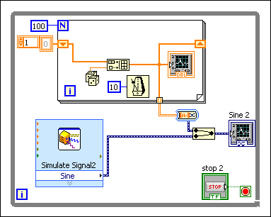

Complete the following steps to replace shift registers with a Feedback Node.
Complete the following steps to replace a Feedback Node with shift registers.
If you do not move the initializer terminal to the edge of a loop before replacing the Feedback Node with shift registers, LabVIEW places the shift registers on the edges of the loop that previously contained the node, as shown in the following block diagrams.
|  | |
If you move the initializer terminal to the edge of a loop before you replace the Feedback Node with shift registers, LabVIEW places the shift registers on the edges of that loop, as shown in the following block diagrams.
|  |  |